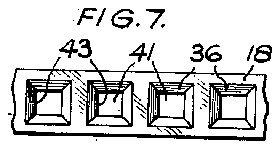
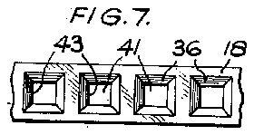

- 8i
- 9circular holes i
- 12opening
- 13cutting edge parts
- 18cutting element
- 19 located against all move
- 20inner wall
- 23pin
- 25handle portion
- 26recesses
- 28 each recess
- 29two nail-cleaning parts
- 31each recess tion
- 32mbeing formed peripherally circular rim
- 36each recess
- 38central cylindrical portion
- 39rm adjaeach recess 35 fiat ,annulariaces
- 42opening
Description
Jan. 9, 1951 c P 2,537,738
MANICURING DEVICE Filed June 24, 1950' 2 Sheets-Sheet 1 INVENTOR ATTO R N EYS Jan. 9, 1951 J. A. CHAPPUIS 2,537,738
MANICURING DEVICE Filed June 24, 1950 2 Sheets-Sheet 2 FIGS. 3 Z] 30 INVENTOE' By AT o N EYS Patented Jan. 9, 1951 UNITED STATE s PATENT OFFICE MANICURING DEVICE John Albert Chappuis, Neuchatel, Switzerland Application June 24, 1950, Serial No. 170,067 In Switzerland July 4, 1949 A further object of the invention is the pro vision of a manicuring device for trimming nails which is particularly well adapted to be manufactured by mass production methods so that the device can be made in a particularly inexpensive manner. Other objects of the invention will become apparent from the following description and claims, and from the following drawings, in which: Figure 1 is a side elevation of one form of manicuring device embodying the present invention and showing the mode of operation of the device. Figure 2 is a perspective'view of the device shown in Figure l with the various parts thereof detached from one another.
Figure 3 is a cross sectional view to an enlarged scale on the line 3-3 of Figure 1.
Figure 4 is a longitudinal sectional view of part of the nail-cutting element of the device depicted in Figure 1.
Figure 5 is a view similar to Figure 4 showing one of the stages element. a
Figure 6 is a plan view of part of the completed element shown in Figure 4, the view being taken in the manufacture of the article presents a novel and striking appearance.
Each body part is of substantially disc-like configuration comprising a fiat inner face l3 of annular configuration, the peripheral edge of each face being largely of part-circular con-' figuration as indicated at [4, each such peripheral edge being formed adjacent the face l3 and medially of the circumferential length of such edge with a recess IS, the base of which recess is formed with an arcuate groove l6 disposed a short distanceinwardly of the peripheral shown at I 8.
looking at the underside of that figure and being on a scale less than that of Figure 4.
Figures 7, 8 and 9 are views similar to Figure 6 showing three modifications. J
Referring firstly to Figures 1 to 3 of the draw,- ings, the manicuring device there illustrated comprises a body ll! of relatively flat and largely circular configuration, the body consisting of two identical body parts ll, 52, each conveniently formed by moulding the same in a suitable plastic, the two parts forming each body being moulded in a material of the same colour but preferably of dissimilar colours, for example, one a white-colour, and the other a red, green or other contrasting colour, so that the assembled .diametrically handle portion 25, the two handle portion being "along the length of parts are brought together edge l4, each groove being adapted when the parts are assembled, to receive one of the two longitudinal edges I! of the elongated-part-cir cular strip metal nail-cutting element which is Each body part II, I2 is formed adjacent the recess IS with a number of circular holes I 9 spaced apart equidistantly and symmetrically therecess, the edge of each of such holes which is more remote from the centre of the body part merging into the recess [5 so that this is'interrupted at positions corresponding to each hole l9, while each hole l9 extends inwardly of the body part beyond the inner wall 20 of the groove l6.
These holes l9 serve to permit of egress of the nail parings during the operation of the device.
Each body part I I, I2 is formed centrally on its fiat face [3 with a circular recess 2| so that when the two parts are assembled, the two re-'- cesses 2i collectively provide a housing as shown in Figure 3, in which 'a spare cutting element indicated at 22 in that figure may-be disposed with the element bent to a curvature greater than its natural curvature shown in Figure 2; so as to engage resiliently with the circular wall of the recesses 2| and thereby to be retained in position.
For "securing the two body partstogether, the annular flat face l3 thereof is provided in each case with an upstanding connecting pin 23 of 1 slightly tapered configuration, each pin being adapted frictionally to engage within a corre spondingly tapered recess 24 when the two body with the fiat faces l3 thereof face toface with one another. To facilitate operation of the device, each body part is formed on its periphery at a pOsition opposite to therecess IS with a thus brought into overlapping relationship with 7 one another when the two parts are assembled f together, and the opposed faces of these. handle portions are formed near the outer edge thereof with recesses 26 so thumb nail of the user the that by the insertion of the rebetween, the two body parts can be forced apart to permit when necessary of the removal and replacement of the of the user so that the pins 23 engage frictionally with their corresponding recesses 24,- thus effectively securing the parts together against movement when the device of use.
relative is either in or out Each body part is recessed peripherally at 21, 28 on each side of each handle portion 25, and
each recess 28 which is adjacentthe pin 23 is I provided centrally with a nail-cleaning part-29 adapted to be inserted at the back of the users nail in the known manner. from Figure 1, when the two parts u,
As will be apparent l2 are assembled, the two nail-cleaning parts 29 are spaced apart from one another so that either part may be used as desired.
'Z-As will be clear and from body parts ll, one another, that is to say,
from the above description an examination of-Figure 2, the two i2 are completely identical with either part may be formed from the same moulding die with resultant saving in production costs.
- Each body part preferably has its outer fac formed as a central cylindrical portion 38 surrounded by an outwardly tapered annular face 3!. as shown in Figure Mbeing formed peripherally circular rim 32 33 which may serve lar matter.
:IThe nail-cutting element corresponding exactly to it so that the ends 3% oi the ends 35 of the groove to carry a 3, the cylindrical portion with an upstanding which bounds a central fiat face dvertising and simi- I8 is or a length the length of the groove the element abut against and recess l5, while the width of the element corresponds to the distance between the bases of when the two body parts are so that the element is ment in relation to 'the body cutting operation. 1..Ihe cutting element length the two grooves l6 assembled together,
located against all move 19 during the nail- I8 is formed from a long of relatively high carbon steel strip of i. e. at the faces indicated at 43 in Figure 6, are
, adj acent periphery width and thiclmess similar to that shown in Figure 2', and a long length of the strip'is adavanced'past a punch to form therein a succession of equally spaced depressions in longitudinal cross section is as 35 so that the strip shown in Figure 5, each such depression being of frusto-conical form internally and being formed. by a male punch operating on the upper side of the strip in Figure die adapted to sectional shape illustrated so that the strip is formed on its underside in Figure 5- at-a positioncentrally 35 with a dependent-cylindrical porof the metal in the each recess tion 31 with the thickness peripheral part of each recess 36 decreasing to- *Wardsthe cylindrical portion, that is to say, the part of the strip indicated at 38 in Figured is of tapered form in The long length of metal s lengths corresponding to the cutting element, each cross section.
trip is now out into length of the nailheattreated so as to harden and'temper it in the known manner, and fin portions 3? are ground away cent the smaller diameter of ally the cylindrical so as to form adjaeach recess 35 fiat ,annulariaces 39 disposedwith their planes paratlelto the plane of the strip,
the inner edges '40 cut length of strip is then adapted to trim the users nail, trimming being effected by positioning the users finger in relation to the device as shown in Figure l with the flesh of the finger adjacent the nail engaging with the 44 of the body part of one side of the opening 12, so that the edge of the nail projects into the opening 42 for engagement with the cutting edge parts 13, and as the nail is'drawn along the length of the cutting element 18, the desired trimming is efiected, the nail parings falling out through the holes IS.
The trimming operation can be effected in several different ways, for example, by drawing the nail continuously across the cutting edge of one of the holes il in the cutting element, by draw: ing the nail along the whole length of the cutting element, or by turning the body so that the cutting element has in eiiect a rolling engagement with the edge of the nail.
In Figures 7, 8 and 9 are depicted alternative shapes to the holes M in the cutting element. These are formed in a manner similar to the construction already described.
The manicuring device particularly described above is extremely convenient to handle, can readily, be disposed in the pocket or handbag oi the user, it presents a neat appearance and can readily and inexpensively be made by mass pro duction methods, while when a cutting element has become worn, it can readily be replaced.
What I claim then is:
1. A 'inanicuring device comprising a body, a strip metal nail-trimming element formed separately from the body, means on said body engaging detachably peripheral portions of said nail-'- trimming element, means on said body retaining said element releasably against movement relative to said body, and said element having nail trimming parts adapted to engage and trim a nail of the user when the body is displaced relative to the nail in close proximity therewith.
2. A manicuring device comprising a body, an elongated strip metal nail-trimming element formed separately from the body, said body having a peripheral opening, said body having recesses on opposite sides of said opening receiving detachably opposite longitudinal edges of said nail-trimming element, means on said body re; taining said element releasably against movement relative to said body, and said element having nail-trimming parts adapted to engage and trim a nail of the user when the body is displaced relative to the nail in close proximity therewith.
3. A manicuring device comprising a body of flat form having a convex peripheral edge, an elongated strip metal nail-trimming element formed separately from the body, said body having a peripheral opening in said peripheral edge thereof, said body having grooves on opposite sides of said opening receiving detachably opposite longitudinal edges of said nail-trimming element. means on said body retaining said element releasably against movement relative to said body, and said element having nail-trimming parts adapted to engage and trim a nail of the user when the body is displaced relative to the nail in close proximity therewith.
4. A manicuring device comprising a body, said body consisting of two identical parts of substantially fiat form, means connecting said two body parts detachably together in opposed face to face relationship, each of said body parts being formed in their opposed faces with a groove of part-circular form, an elongated arcuate shaped strip metal nail-trimming element having its two longitudinal edges located one in each groove with its ends in engagement with the ends of each of said grooves, each of said body parts adjacent the said groove therein being formed with a peripheral Opening, said element extending transversely of said opening and spaced inwardly thereof by a distance sufliciently small as to permit of engagement of the users nail with the trimming element to eiiect trimming thereof when the body is displaced relative to the hail of the user in a direction along the length of the element.
5. A nail manicuring device comprising a body consisting of a pair of identical body parts connected detachably together in face to face overlapping relationship, said body parts being formed with a recess along each of their opposed faces adjacent the periphery of the body, said recesses being disposed opposite to one another and extending each for a portion of the peripheral length of said body and co-operating with one another to provide a peripheral opening in said body. each of said body parts having a groove in the recess therein, said two grooves being disposed oppo ite to one another and extending longitudinally of the corresponding recess. an elongated strip metal cutting element provided with nailcutting edges extending transversely to said peripheral opening with its longitudinal edges dispo ed in one of each of said grooves. said element being di posed immediately inwardly of said perip eral body opening to receive the end while the cutting edges of said element a e shielded by the peripheral edges of sa d open ng and opposite ends of said strip metal cutting element abut opposite ends of said body grooves.
6. A nail manicuring device hav ng a peripheral opening extending for a portion of the peripheral length of said body, said body having a pair of opposed grooves disposed comprising a body metal nail-cutting elem nt 1y to said peripheral body opening with its longitudinal edges dis os d one in each of said grooves, said element being disposed immediately inwardly of the mouth of said peripheral body opening to receive the end of the user's nail, while the cutting edges of said element are shielded by the peripheral edges of said opening and opposite ends of said strip metal cutting element abut on opposite sides of said opening and 7. A manicuring device comprising a body, said body consisting. of two parts, means connecting said two body parts detachably together in opposed face to face relationship, each of said body parts being formed in their opposed faces with a groove of art-circular form, an elongated strip metal nail-trimming element having its two longitudinal edges located one in each groove with its ends in engagement with the ends of each of said grooves, each of said body parts adjacent the said groove therein being formed with a peripheral opening, said element extending transversely of sa d opening and spaced inwardly-thereof by a distance sufficiently small as to permit of engagement of the users nail with the trimming element to efiect trimming thereof when the body is displaced relative to the nail of the user in a direction along the length of the element.
8. A device according to claim '7, wherein each body part is provided with a pin of tapering frusto-conical configuration adapted to engage frictionally in a correspondingly shaped opening opposed faces of each body part are formed cenholes constituting nail-cutting edges.
12. A device according to claim '1 wherein the strip metal nail-trimming element is formed with 13. A device according to cla m 1, wherein the strip metal nail-trimming element has a series of holes therein spaced apart along the length of the strip, the edges of said holes being pressed face of the pressed part of plane annular form and extending parallel to the plane of the strip to form one side of the nail-cutting edge, the
JOHN ALBERT CHAPPUIS.
No references cited.